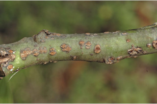
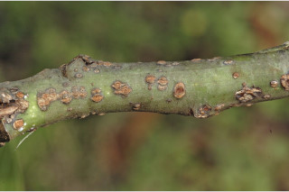
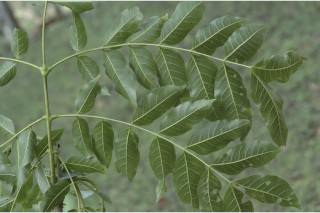
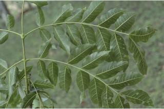
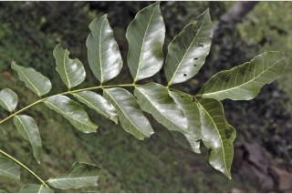
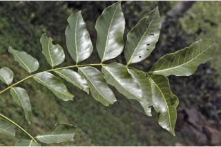
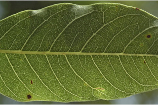
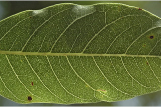

Large deciduous tree with buttresses, up to 40 m tall.
ಆನಿಕೆಗಳನ್ನುಳ್ಳ, ಎಲೆಯುದುರುವ, 40 ಮೀ. ಎತ್ತರಕ್ಕೆ ಬೆಳೆಯುವ ದೊಡ್ಡಗಾತ್ರದ ಮರಗಳು.
40 മീറ്റര് വരെ ഉയരത്തില് വളരുന്ന വപ്രമൂലത്തോടുകൂടിയ, ഇലപൊഴിക്കുന്ന, വന്മരങ്ങള്.
பெரிய இலையுதிர் மரம் மற்றும் தாங்கு வேர் (பட்ரஸ்டு) கொண்டது, 40 மீ. உயரம் வரை வளரக்கூடியது
Leaves compound, bipinnate, very large, 2-3_pinnate, paripinnate; stipules caducous; pinnae 3-5 pairs, each with 5-6 pairs of leaflets; lamina 4-15 x 1.5-4.5 cm, lanceolate, apex acuminate, base broadly attenuate, oblique, margin entire, serrate in seedlings, subsessile, glabrous, subcoriaceous; midrib raised above; secondary_nerves 8-12 pairs; tertiary_nerves broadly reticulate.
ಎಲೆಗಳು ದೊಡ್ಡಗಾತ್ರದವು ಹಾಗೂ ಸಮಸಂಖ್ಯೆಯ ದ್ವಿಗರಿ ರೂಪಿ ಸಂಯುಕ್ತ ಮಾದರಿಯವು; ಕಾವಿ ನೆಲೆಗಳು ಉದುರಿಹೋಗುವ ರೀತಿಯವು; ಗರಿಗಳು 3 ರಿಂದ 5 ಜೋಡಿಗಳಿದ್ದು, ಪ್ರತಿ ಗರಿಗಳಲ್ಲಿ 5 ರಿಂದ 6 ಜೋಡಿ ಕಿರುಎಲೆಗಳಿರುತ್ತವೆ; ಪತ್ರಗಳ ಕಾತ್ರ 4 - 15 x 1.5 - 4.5 ಸೆ.ಮೀ. ಇದ್ದು, ಆಕಾರದಲ್ಲಿ ಭರ್ಜಿಯನ್ನು ಹೋಲುತ್ತವೆ.
പാരിപിന്നേററ് ക്രമത്തില് ദ്വീപിച്ഛകമോ രാേ മൂന്നോ പിച്ഛകമോ ആയ, വളരെ വലിയ, ബഹുപത്രങ്ങള്; അനുപത്രങ്ങള് എളുപ്പം കൊഴിഞ്ഞുപോകുന്നതാണ്; 3 മുതല് 5 വരെ ജോഡി പിച്ഛ്കങ്ങള്, ഓരോന്നിലും 5 ഓ 6 ഓ ജോഡി പത്രകങ്ങള്; പത്രകഫലകത്തിന് 4 സെ.മി മുതല് 15 സെ.മി വരെ നീളവും 1.5 സെ.മി മുതല് 4.5സെ.മി വരെ വീതിയും, കുന്താകാരം, ചെരുവാലോടുകൂടിയ പത്രാഗ്രം, വീതിയേറിയ സാവധാനം നേര്ത്തവസാനിക്കുന്ന ആയ പത്രാധാരം, ചരിഞ്ഞതും, ഏവിഭജിതവുമാണ്, തൈകളില് ദന്തുരമാണ്, ഉപഅവൃന്തം, അരോമിലം, ഉപചര്മ്മില പ്രകൃതം; മുകളില് ഉയര്ന്നു നില്ക്കുന്ന മുഖ്യസിര; 8 മുതല് 12 വരെ ജോഡി ദ്വതീയ ഞരമ്പുകള്; വീതിയേറിയ ജാലിക തീര്ക്കുന്ന ത്രിതീയ ഞരമ്പുകള്.
கூட்டிலை, இருமுறை கிளைத்த சிறகுவடிவக்கூட்டிலை (பைபின்னேட்); பெரியது, சிலசமயங்களில் மூன்றுமுறை கிளைத்த சிறகுவடிவக்கூட்டிலை (2-3 பின்னேட்), இரட்டைபடை சிறகுவடிவக்கூட்டிலை (பேரிபின்னேட்); இலையடிச்செதில் உதிரக்கூடியது; பின்னே 3-5 ஜோடிகள், ஒன்றொன்றும் 5-6 ஜோடி சிற்றிலைகளை கொண்டது; இலை அலகு 4-5X1.5-4.5 செ.மீ., ஈட்டி வடிவம், சிற்றலையின் நுனி அதிக்கூரியது, அலகின் தளம் அட்டனுவேட், சமமற்றது, அலகின் விளிம்பு முழுமையானது, சிறுகன்றின் இலைகள் ரம்ப பற்களுடையது, மிகச்சிறிய காம்புடையது, உரோமங்களற்றது, சப்கோரியேசியஸ், மையநரம்பு மேற்பகுதியில் அலகின் பரப்பைவிட உயர்ந்து காணப்படும்; இரண்டாம் நிலை நரம்புகள் 8-12 ஜோடிகள்; மூன்றாம் நிலை நரம்புகள் வலைப்பின்னல் அமைப்பு கொண்டது.
Inflorescence dense axillary racemes; flowers green with crimson stamens, pedicels short.
ಪುಷ್ಪಮಂಜರಿಗಳು ದಟ್ಟವಾಗಿದ್ದು, ಅಕ್ಷಾಕಂಕುಳಿನಲ್ಲಿರುವ ಮಧ್ಯಾಭಿಸರ ರೀತಿಯವು; ಹೂಗಳು ಹಸಿರು ವರ್ಣದಲ್ಲಿದ್ದು, ಕಡುಕೆಂಪು ವರ್ಣದ ಕೇಸರಗಳನ್ನು ಹೊಂದಿರುತ್ತವೆ; ಹೂ ತೊಟ್ಟು ಚಿಕ್ಕದಾಗಿರುತ್ತದೆ.
കക്ഷങ്ങളിലുാകുന്ന കനത്ത റസീം പൂങ്കുരലകള്; ക്രീംസണ് നിറത്തിലുള്ള കേസരങ്ങളുള്ള, ചെറിയ പൂഞെട്ടുകളുള്ള, പച്ചനിറത്തിലുള്ള പൂക്കള്
மஞ்சரி கொத்தான இலைக்கோணங்களில் காணப்படும் ரெசீம்; மலர்கள் பச்சை நிறம், மகரந்த பைகள் சிவப்பு நிறமானது, மலர்காம்பு சிறியது.
Pod flat, ligulate, dehiscent, winged; seeds 5-10, obovate, oblique, compressed.
ಕಾಯಿಗಳು ಬಟಾಣಿ ಅಥವಾ ಹುರಳಿಯ ಹೋಲುವ ಪಾಡ್ ಮಾದರಿಯಲ್ಲಿದ್ದು, ಶಲ್ಕಾ ಮಾದರಿಯ ಪತ್ರಕ ಸಮೇತವಿದ್ದು,ಬಿರಿಯುವ ಗುಣ ಹೊಂದಿದ್ದು ರೆಕ್ಕೆಯುಕ್ತವಾಗಿರುತ್ತವೆ; ಬೀಜಗಳು 5 ರಿಂದ 10 ಇದ್ದು, ಬುಗುರಿ ಆಕಾರದಲ್ಲಿದ್ದು, ಓರೆಯಾಗಿದ್ದು ಅದುಮಿದ ಹಾಗೆ ಇರುತ್ತವೆ.
കയ ചിറകുകളുളളതും, പൊട്ടിത്തുറക്കുന്നതും ലിഗുലേറ്റ് ആയ പരന്ന പോഡ് ആണ്; പരന്നതും ചരിഞ്ഞതും, അപഅണ്ഡാകാരമുള്ളതുമായ 5 മുതല് 10 വരെ വിത്തുകള്.
பாட் கனி (அவரைப்போன்றது), தட்டையானது லிகுலேட், வெடிக்கனி, இறகு கொண்டது; விதைகள் 5-10, தலைகீழ் முட்டை வடிவம், தளத்தில் சமமற்றது.

 

 

 


 
